|
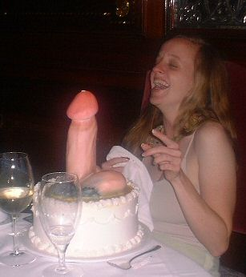 Penis CakesI'm Bill Kurtis. For centuries, men and women have searched for innovative ways to stuff their mouths with enormous dicks. Whether single or looking, straight or gay, happily married or fading quietly into the background of an interminable bachelorette party, never forget that Valentine's Day looms somewhere in your immediate future. This year, instead of disposable diamonds, sappy love poems or a forgettable second honeymoon, take a cue from the Rotten Library and lovingly craft for your significant other something they can really choke down good and proper. "Erotic" cakes have an uncertain history, since a cake can only be defined abstractly: an amalgam of doughy, tactile ingredients smooshed together and solidified to some degree -- without necessarily being placed against fire or inside a wood burning stove. In ancient times, cakes were rolled or hand-pressed into patties which more closely resembled bread, optionally sweetened with raisins, nuts, or honey. Whether or not turn-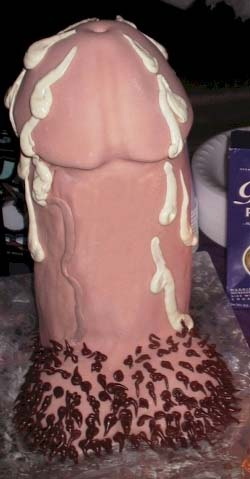of-the-century pattycakes will ever qualify as "erotic" is a source of endless rivalry among today's leading anthropologists. One point of scholarly agreement is that based on cave paintings and crude etchings, boobs and boners sure looked weird back then. Even the English word "cake" is an unfortunate generational deritvative of the Norse word kaka, making a scholarly review of penis cakes all the more childish. The ancient Greeks called their cakes plakous, meaning flat -- but the word later evolved to evoke images of the placenta, introducing concepts which could not be any less erotic and therefore beyond the scope of this tutorial. Soap cakes and urinal cakes certainly fit the Oxford English dictionary's limited description. They're typically flat, and they have been glimpsed in or around the company of penises -- although their level of eroticism remains steadfastly relative to personal preference. 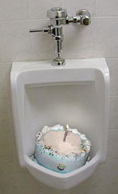The earliest cakely prototypes -- erotic or otherwise -- first popped up in 17th century Europe, after technological advancements in ovens and tin tray molds caught up to the availability of flour and refined sugar. The erotic titty cakes and big-balled popovers we've come to know and love emerged over time from flattened cookies and shortbreads. Eventually, sweeter icings evolved from simple fruit garnishes and glazes: sticky, boiled compositions of sugar and egg whites. Several generations of erotic chefs would live and die before refined white flour and baking powder replaced yeast, making cakes ten times more delicious and paving the way for more edible pastries truly worth knob-gobbling. "You Design It, We'll Bake It" is the company motto of the world-famous Kopps Bakery, where all the cakes are hand-carved and never made from a mold. Kopps has been in business since 1961, and now boasts over 350 stores around the globe. Their press release claims they can create "any design you can imagine, from a couple making love to a hand-carved male organ or a female torso with edible panties and bra". The names of individual pastries in their bachelorette catalogue reads like a laundry list of rejected Hustler magazine copy: Dick Laying on Her Breasts, Ride 'Em Cowgirl on a Big Dick, Male Organ in Butt, Long Thin Johnson in Big Black Ass (made to order) -- and the enigmatic Busted-Up Dick Cake That Had Cum for the Last Time. Take at look at the artful, precision handiwork Kopps can deliver in just under an hour:
Christ on the cross, maybe they do need a mold. Somebody get these folks a muffin tin. Their online order form is similarly cluttered: just millimeters away from the link to order a Big Daddy Dick Cum Cake, one can accidentally click the Sesame Street Elmo cake. Watch those butterfingers, mom. 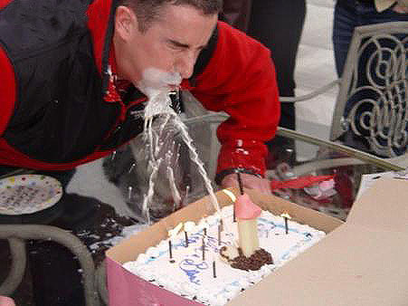And watch those copyrights: a triple-tiered vanilla angel food cake fashioned after your ex-boyfriend's cock sock will be easier to market and sell than anything you've constructed with a Mickey Mouse mold or Spongecake Squarepan. Respected baking supply companies like Sugarcraft of Hamilton, Ohio specialize in the art of food decoration. They go out of their way to distance themselves from clients who sell unauthorized cakes made from molds of copyrighted characters like Winnie the Pooh, Barney, Dora the Explorer and others. In dessert factories, the mantra is still "don't mess with the mouse". Copyright police who show up to harass your small-scale bakery are happy to set you up with a $10,000 fine. Because of zoning regulations, chef Paul Condra's Erotic Bakery in Seattle, Washington is the only full-time penis cake manufacturer in the Pacific Northwest. Working with a two-man crew, Conda serves close to 150 customers each day. "We're very streamlined and efficient. The gummy boobs and gummy penises are very popular," Condra told the University of Washington Daily. Since 1986, Condra's penis cakes have remained the Erotic Bakery's best-selling items -- so popular, in fact, that the Erotic Bakery has branched out into a line of paper goods: plates and napkins covered with penises, penis-shaped straws and dry pasta fashioned after big bent boners. 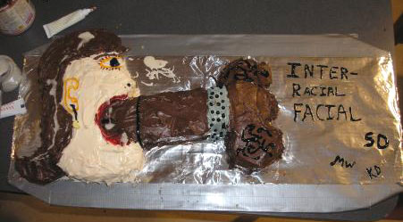Other hazards you might encounter as a baker of erotic cakes are nuisances constructed by cranky, uptight citizenry. In 2005, a Belgian woman sued the owner of a private pastry boutique who dared to peddle erotic marzipan figures for Valentine's Day. The woman claimed the cakes depicted sexual positions, and argued that they shouldn't be publicly displayed in the baker's shop window. The chef, identified by the Het Laatste news service only as Baker Van Buggenhout (say it out loud if you wish) insisted that it was all in fun -- and that the figures didn't even show sexual organs. "People laugh when they see them," the baker stated calmly, neither bugged out nor on the verge of bugging out. "They buy them to give to their wives or girlfriends." The elderly complainant who lived near the bakery shop window insisted that by putting the erotic morsels on display, the baker was effectively exposing children to pornography. 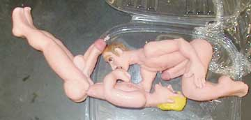Meanwhile, have you seen what passes for window displays in Amsterdam? Hint: big floppy half-naked prostitutes underneath red light bulbs, none of which are made of fresh marzipan. And as for you footloose and fancy-free gay dads, Kopps Bakery more or less has you covered with treats like the Gay Bed Cake and the infamous Marzipan Men To Lick Cake. This treat features two cuddly Ken doll look-a-likes, determined dongs pointing north, cavorting in the yin-yang position. In addition to misshapen lumps of frosting, Kopps' Erotic Bakery created the world's largest chocolate cream pie for the Rosie O'Donnell show: over six feet in diameter and 800 pounds. Then in 1998, they created the world's largest Pop Tart, showcased in Madison Square Garden -- 25 feet by 35 feet, weight over 1500 pounds. 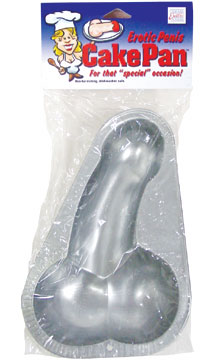If your modeling skills are less than stellar -- or the idea of squeezing dough into crude shapes which only vaguely resemble testicles, penis cake pans might be the way to go. Suitable for shaping cookies, brownies, or Jell-O, the majority of consumer peckerware and booby molding cups are dishwasher safe and non-tarnishing. Naturally, they're available in a variety of "big boy" shapes, sizes and circumcisions -- and quite perfect for raucous bachelorette parties or nudging that long-awaited sexual harassment suit up into second gear. For those even less talented in the cooking department, curiously-shaped cake toppers are an elegant afterthought. These are miniature, edible accoutrements, typically made of marzipan or a gelatinous gummy bear substance, widely available in novelty shops. Cake toppers can be squiggled and bent to represent numerical shapes (Congrats On Your 40th) or fashioned from fine beeswax into proper candles, affectionately referred to as dicks with wicks. The inscriptions which traditionally accompany personalized erotic cakes -- penis and otherwise -- range from lukewarm and uninspired to dull-as-an-office-party. According to Masturbakers, a custom cake and pastry manufacturer in New York, there are eight particularly popular pieces of copy which never go out of style. In no particular order, consider communicating your appreciation with clever quippery like Tits Your Birthday, Breast 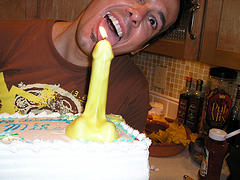Wishes, Make A Wish And Blow, This Butt's For You, To Have And To Hold, The Breast Is Yet To Cum, and of course the old chestnuts A Hard Man Is Good To Find and Have Your Cake And Eat It Too. Masturbakers' cakes are reasonably priced: an extra large John Holmes cake will run you about $100. A large Pussy cake, meanwhile, goes for $65. The Tommy Lee, with optional tuxedo, will feed anywhere from ten to twelve children for a modest $45. All the way across the country -- for $1,800 -- costume and prop supplier Tim Vittetoe Originals in Washington state can manufacture a pop-out stripper cake four feet in diameter, perfect for stage shows or special events, and capable of supporting overweight strippers weighing up to and including three hundred pounds! Gross. 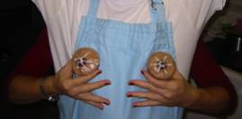When Adam Roberts of Amateur Gourmet chose to immortalize floppy, disgusting boobs in dessert form, he took a cue from the Janet Jackson Super Bowl incident. Roberts found the perfect recipe for cappuccino cupcakes with cocoa-tinted white chocolate and sour cream frosting. The hard part was making the boobs just the right shade of brown, to match Ms. Jackson's skin tone. After several experiments, he ended up sifting together powdered sugar with "a cautious amount" of cocoa. A single Hershey's Kiss served as the nipple, piping white icing in a spider web lattice to simulate the nipple jewelry. "The likeness was uncanny," Roberts reported. So delighted was Adam with his erotic accomplishment that he now sells T-shirts celebrating his Jackson cupcakes. 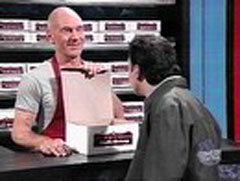And let's never forget the dutiful service record of Patrick Stewart (a.k.a. Captain Jean-Luc Picard of the Starship Enterprise) who served as a guest host on Saturday Night Live in February of 1993. One of the characters he chose to portray was a baker of erotic cakes, fixated on one subject in particular. Let's ripple-dissolve to the fading sound of angels strumming on flashback harps and remember that classic sketch together. Young Man: Yeah, my friend's having a bachelor party, and I thought
it might be kind of fun if I got him an erotic cake. Today of course, dirty pictures from your computer -- even in GIF or JPEG format -- can easily be transferred photo realistically to a cake right in your own home, without the hassle of nosy third-party erotic vendors or copyright enforcement police. Feel free to do it yourself: the CopyKake company in Torrence, California sells edible inks offering outstanding color reproduction with a 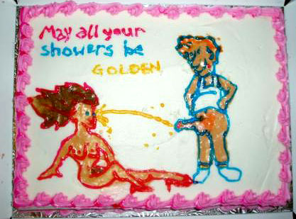minimum of "head clogging," a common printing problem which sounds conspicuously like the inspiration for an erotic cake in and of itself. Intentional or otherwise, CopyKake's groundbreaking line of computerized cake decorating products have helped bring erotic pastries into the twenty-first century. Sadly, the majority of customers who purchase edible inks have yet to adequately exploit the technology for the purposes of erotica. Printers compatible with the Canon brand of bubble jets can be loaded with edible ink cartridges -- cyan, magenta, yellow and black. The unused inks have a shelf life of six months, if properly refrigerated. Thermal reversibility allows for an optimum ratio of colored inks to bond with the icing. Pornography can be printed with these edible inks onto frosting sheets: light, edible papers made of corn starch and sugar. The sheets, freshly inked, are peeled from their backings and laid atop a refrigerated cake flat-frosted with butter cream or non-dairy topping. In fifteen minutes, your hand-made erotic cake will be more than ready to sproing on a loved one -- just in time for Valentine's Day.
|